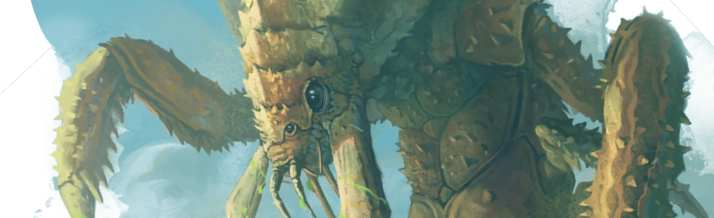
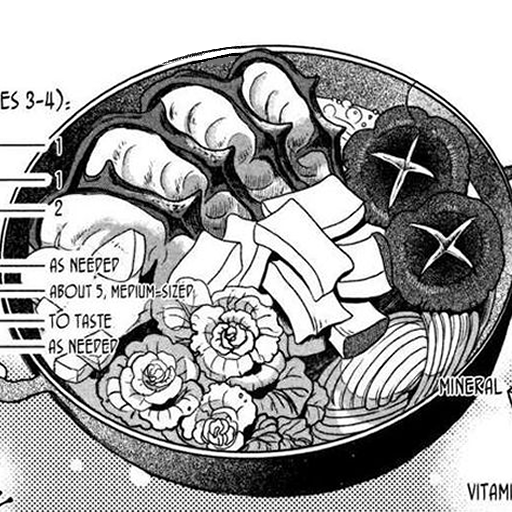
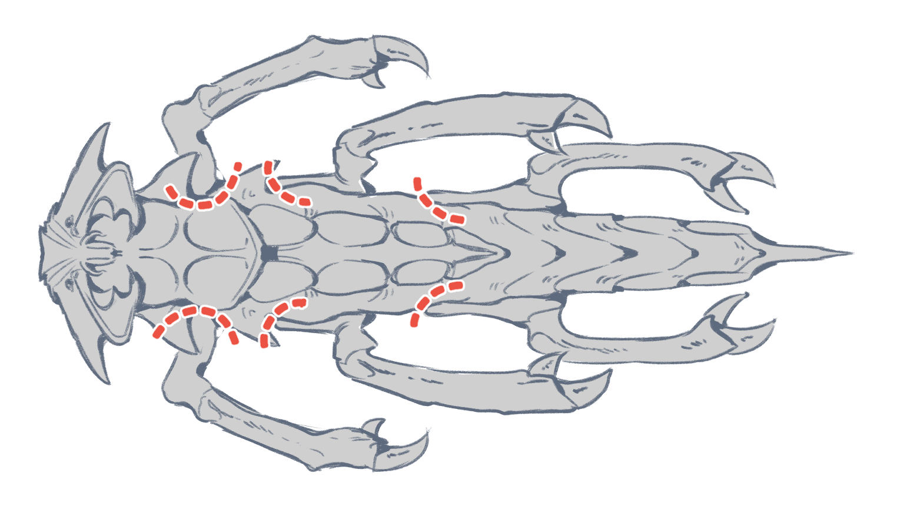
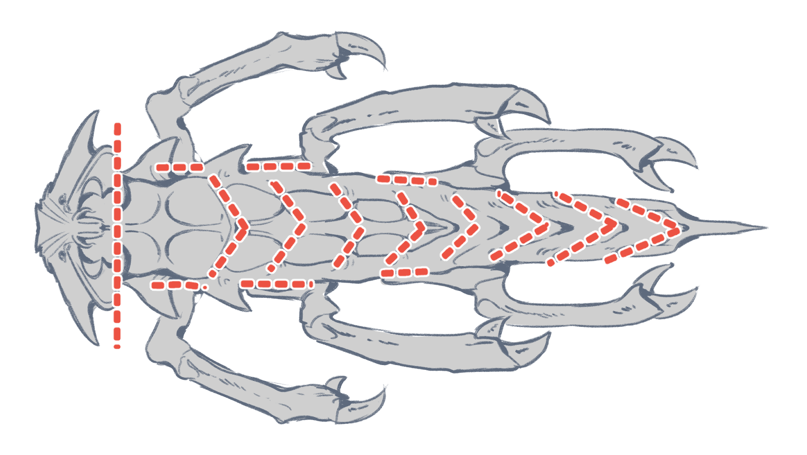

Ankheg cocido

Características e ingredientes
- Requiere paciencia y varios días de preparación.
- Agua en abundancia
- Bicarbonato 1kg
- 6 limones
- Verduras de cocido
Cómo preparar
Como bien sabrás, el Ankheg es una criatura crustácea que habita en cuevas y minas abandonadas. Puede llegar a medir entre 3 a 10 metros de largo, y le gusta esconderse en el subsuelo. El ácido que dispara por su boca es suficiente para derretir la carne pero dejar el hueso intacto, el alimento que realmente busca un ankheg. Es este ácido el que tenemos que quitar primero.

Primero, haz incisiones en los huecos que te he indicado arriba. Son generalmente debajo de la articulación de las patas. Por ahí es donde están las reservas de ácido que luego se escupe. ¡Ten cuidado y lleva protección! Es posible que te salte y una sola gota es suficiente para hacerte perder un ojo. Incluso la piel resistente al ácido no se libra de sufrir quemaduras de segundo grado.
Una vez hechas las incisiones, tienes que dejar que sangre un día entero en un sitio seguro. A mi me gusta colgarlo de un arbol y poner debajo tinas de metal encantado. Si no, cualquier recipiente con runas de resistencia al ácido pueden valer, aunque igual luego ya no lo puedes volver a utilizar.

Tras haberlo desangrado bien, vamos a proceder a cortarlo. Generalmente sigue la anatomía de cualquier crustráceo, solo que el doble de grande. Recomiendo utilizar una buena hacha de guerra para este trabajo. Las patas son lo mas rico, pero recomiendo separar bien la cabeza con cuidado de retirar la columna. Dentro tiene bastante carne que da mucho sabor a la sopa. También es recomendable cortar los pinchos de sus patas para que los comensales no se corten al comer.
Ahora viene otro día de espera. Sumerge cada parte en una solución 1:6 de bicarbonato y agua, con un limón entero exprimido por cada parte. Esto ayuda a sacar todo el ácido residual. Una vez el agua cambie a un color verduzco, tíralo a la hierba y vuélvelo a llenar hasta que el agua permanezca clara tras una hora. No te preocupes por tirar este agua: el ácido residual ya no está activo, pero si un sabor que no deseamos que permanezca demasiado con la carne.
Tras haber completado todos estos pasos, ¡toca cocinar de verdad!
¡A comérselo!
En mis viajes ya he visto a varios pueblos que celebran la muerte de un ankheg como una comida comunal, y sinceramente no es una receta que pueda preparar una sola persona. Si el tiempo lo permite, se hace una hoguera en la plaza del pueblo y cada hogar trae una pota para cocer el ankheg, y cada vecino una verdura que tenga en casa. Cualquier verdura de hoja o tubérculo puede ir perfecto para esta receta. En cuanto a especias, recomiendo ir a lo mínimo: sal, ajo y la especia que más se use en tu región. Ya verás como el sabor del ankheg y la verdura es suficiente para darle profundidad a tu plato.
Me encantan este tipo de platos porque son comunales y festivos. Una vez me dijeron que la comida sabe más rica en compañía, y es con estos platos que al fin entiendo por qué se dice. ¡No hay nada más rico que el sabor del esfuerzo!
Consejos extra
Una adición muy interesante a este plato es la adición de bayas dulces, porque creo que contrastan muy bien con la acidez del limón. Te dejo abajo a una exploradora que sabe de lo que habla a la hora de recoger bayas.
Y esta es la receta de hoy. ¡Buen día y mejor caza!